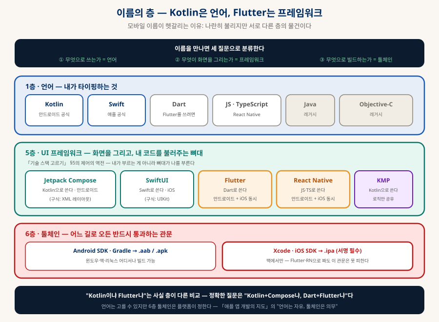
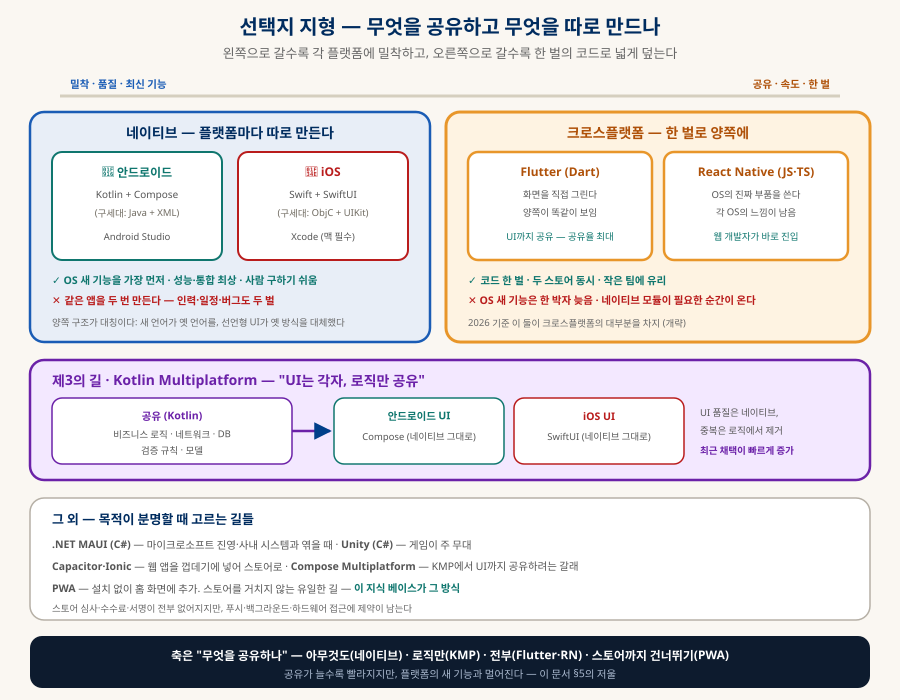
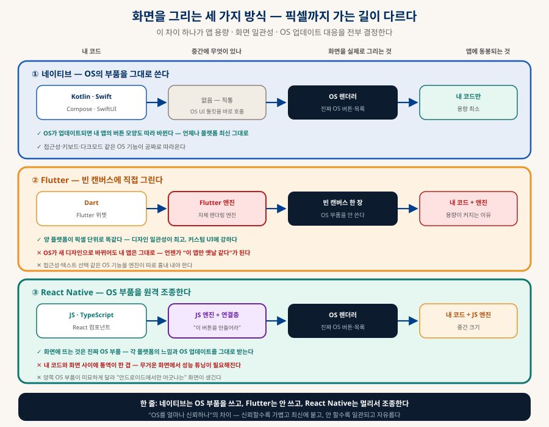
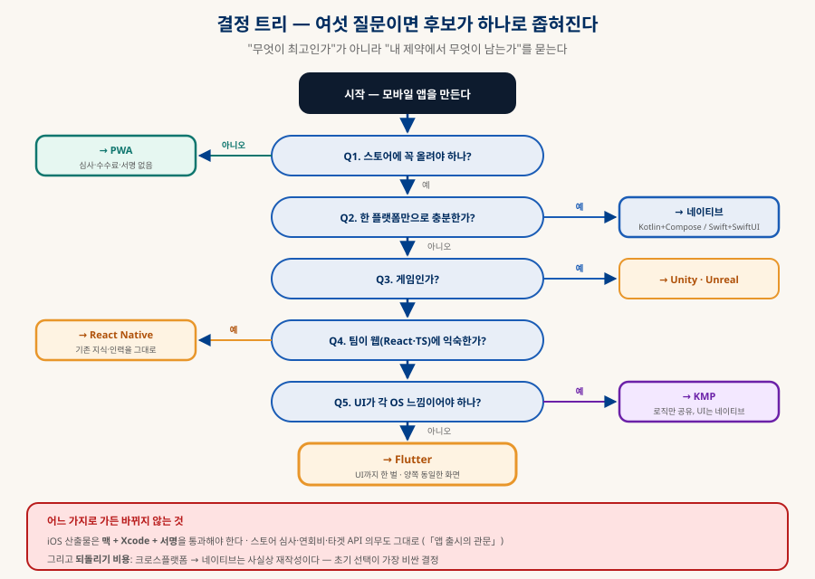

모바일 앱 개발 스택 지도
Kotlin은 언어, Flutter는 프레임워크
Kotlin · Flutter · Swift · React Native · KMP가 나란히 불리지만 서로 다른 층의 물건이다. 언어와 프레임워크와 툴체인을 먼저 갈라놓고, 네이티브와 크로스플랫폼의 지형을 그린 뒤, "무엇을 공유하고 무엇을 따로 만드나"라는 하나의 축으로 선택지를 정렬한다. 그리고 어느 길로 가도 바뀌지 않는 것 — 맥·서명·심사 — 까지.
0. 한눈에 보기 — 네 문장
급한 사람을 위한 요약
프레임워크 (§1)
같은 구조의 반복 (§2)
공유하나 (§3·§4)
맥·서명·심사 (§7)
0-1. 이 문서의 개념 그래프 — 노드를 눌러 관계를 따라가기 (인터랙티브)
이 문서에 나오는 개념들을 노드로, 이름 붙은 관계를 선으로 그렸다. 노드를 누르면 이웃만 밝아지고 관계 이름이 선 위에 나타나며, 아래 칸에 한 줄 정의와 해당 절로 가는 링크가 뜬다. 끌어서 옮길 수도 있다.
1. 이름의 층 — 언어 · 프레임워크 · 툴체인
세 질문으로 모든 이름이 분류된다

| 이름 | 층 | 쓰는 언어 | 한 줄 |
|---|---|---|---|
| Kotlin | 언어 (1층) | — | 안드로이드 공식 언어. JetBrains가 만들고 구글이 채택 |
| Swift | 언어 (1층) | — | 애플 공식 언어 (「애플 앱 개발의 지도」 §6) |
| Dart | 언어 (1층) | — | Flutter를 쓰려고 배우는 언어. 단독으로 쓰는 일은 드물다 |
| Jetpack Compose | 프레임워크 (5층) | Kotlin | 안드로이드의 선언형 UI. XML 레이아웃을 대체 |
| SwiftUI | 프레임워크 (5층) | Swift | iOS의 선언형 UI. UIKit을 대체 |
| Flutter | 프레임워크 (5층) | Dart | 화면을 직접 그려 양 플랫폼을 덮는다 |
| React Native | 프레임워크 (5층) | JS · TypeScript | 각 OS의 네이티브 부품을 JS에서 조종 |
| Android SDK · Xcode | 툴체인 (6층) | — | 빌드·서명·패키징 (「SDK와 툴체인」) |
2. 네이티브 — 양쪽이 놀랍도록 대칭이다
안드로이드를 알면 iOS가 보이고, 그 반대도 마찬가지
| 항목 | 🤖 안드로이드 | 🍎 iOS |
|---|---|---|
| 현역 언어 | Kotlin | Swift |
| 레거시 언어 | Java | Objective-C |
| 현역 UI | Jetpack Compose | SwiftUI |
| 구식 UI | XML 레이아웃 | UIKit |
| IDE | Android Studio | Xcode |
| 빌드 도구 | Gradle | xcodebuild |
| 패키지 매니저 | Gradle (Maven 저장소) | SwiftPM (깃 주소로 직접) |
| 산출물 | .aab (업로드) · .apk (설치) | .ipa |
| 개발 OS | 윈도우 · 맥 · 리눅스 | 맥만 |
| 등록비 | 1회성 | 연회비 |
구조가 거울처럼 겹친다. 양쪽 다 새 언어가 옛 언어를 대체했고(Java→Kotlin, ObjC→Swift), 선언형 UI가 명령형 방식을 대체했다(XML→Compose, UIKit→SwiftUI). 선언형이란 "화면이 이렇게 생겨야 한다"를 적으면 프레임워크가 알아서 갱신하는 방식이고, 구식은 "이 버튼의 글자를 바꿔라"를 일일이 지시하는 방식이다. 「애플 앱 개발의 지도」 §6-C에서 다룬 SwiftUI와 UIKit의 차이가 안드로이드에서 그대로 반복된다.
3. 크로스플랫폼 — Flutter와 React Native
한 벌로 양쪽을 덮는 두 방식

| Flutter | React Native | |
|---|---|---|
| 언어 | Dart | JavaScript · TypeScript |
| 화면을 그리는 법 | 직접 그린다 — 자체 렌더링 엔진이 픽셀을 찍는다 | OS 부품을 조종한다 — 진짜 네이티브 버튼·목록을 JS가 지시 |
| 결과 | 양 플랫폼에서 똑같이 보인다. 디자인 일관성이 높다 | 각 OS의 느낌이 남는다. 플랫폼 표준에 가깝다 |
| 진입 장벽 | Dart를 새로 배운다 (문법은 평이) | 웹 경험이 그대로 전이 — React를 알면 거의 바로 |
| 강점 | 복잡한 커스텀 UI · 애니메이션 · 웹·데스크톱까지 확장 | 인력 풀이 넓다 · 웹과 코드·지식 공유 · 생태계가 크다 |
| 약점 | Dart 생태계가 좁다 · 앱 용량이 큰 편 | 복잡한 화면에서 성능 튜닝이 필요 · 네이티브 모듈 의존 |
3-1. 코드 한 벌이 두 스토어에 닿기까지 (동적)
크로스플랫폼의 약속은 "한 번 짜서 양쪽에"다. 그런데 코드는 한 벌이어도 빌드 경로는 끝까지 두 갈래이고, 그중 한쪽에는 맥이라는 문턱이 있다:
3-2. 화면을 그리는 세 가지 방식 — 이 차이가 나머지를 정한다
§3 표에서 "Flutter는 직접 그리고 React Native는 OS 부품을 조종한다"고 한 줄로 적었는데, 이 차이가 앱 용량 · 화면 일관성 · OS 업데이트 대응을 전부 결정한다. 픽셀까지 가는 길을 나란히 놓으면 이렇다:

| 따라오는 결과 | 네이티브 | Flutter | React Native |
|---|---|---|---|
| 앱에 동봉되는 것 | 내 코드만 | 내 코드 + 렌더링 엔진 | 내 코드 + JS 엔진 |
| 기본 앱 용량 | 가장 작다 | 가장 크다 | 중간 |
| OS가 새 디자인으로 바뀌면 | 내 앱도 따라 바뀐다 | 그대로 — 직접 고쳐야 한다 | 따라 바뀐다 |
| 양 플랫폼 화면 차이 | 당연히 다르다 | 픽셀 단위로 같다 | 미묘하게 다르다 |
| 접근성·텍스트 선택 | OS 것이 공짜로 | 엔진이 흉내 내야 한다 | OS 것이 대체로 따라온다 |
| 커스텀 디자인 | 부품을 거스르면 힘들다 | 자유롭다 — 빈 캔버스니까 | 부품의 한계 안에서 |
3-3. 같은 화면, 네 가지 코드 — 문법만 다르고 뼈대는 같다
버튼을 누르면 숫자가 오르는 화면을 네 스택으로 각각 써보면, §2에서 말한 "대칭"이 눈으로 보인다. 넷 다 ① 상태를 선언하고 ② 화면의 모습을 묘사하고 ③ 이벤트에서 상태를 바꾼다는 같은 뼈대다 — 이것이 선언형 UI의 공통 구조이고, 하나를 익히면 나머지의 학습 비용이 줄어드는 이유다.
@Composable fun Counter() { var count by remember { mutableStateOf(0) } // ① 상태 Column { // ② 모습 Text("눌린 횟수: $count") Button(onClick = { count++ }) { // ③ 이벤트 Text("누르기") } } }
struct Counter: View { @State private var count = 0 // ① 상태 var body: some View { // ② 모습 VStack { Text("눌린 횟수: \(count)") Button("누르기") { count += 1 } // ③ 이벤트 } } }
class _CounterState extends State<Counter> { int count = 0; // ① 상태 Widget build(BuildContext context) => Column( // ② 모습 children: [ Text('눌린 횟수: $count'), ElevatedButton( onPressed: () => setState(() => count++), // ③ 이벤트 child: Text('누르기'), ), ], ); }
function Counter() { const [count, setCount] = useState(0); // ① 상태 return ( // ② 모습 <View> <Text>눌린 횟수: {count}</Text> <Button title="누르기" onPress={() => setCount(count + 1)} /> // ③ 이벤트 </View> ); }
4. 제3의 길 — KMP, 그리고 그 외 선택지
"전부 공유"와 "전부 따로" 사이
Kotlin Multiplatform(KMP)은 절충안이다. 비즈니스 로직·네트워크·데이터베이스·검증 규칙처럼 화면이 아닌 부분만 Kotlin으로 공유하고, UI는 각 플랫폼의 네이티브로 따로 만든다(Compose와 SwiftUI). "중복의 대부분은 로직에 있고, 품질 차이는 UI에서 난다"는 판단이다. 2026년 들어 채택이 빠르게 늘고 있으며, UI까지 공유하려는 Compose Multiplatform이라는 갈래도 함께 자란다(개략).
| 선택지 | 언어 | 언제 고르나 |
|---|---|---|
| Kotlin Multiplatform | Kotlin | UI 품질은 네이티브로 지키되 로직 중복은 없애고 싶을 때. 안드로이드 팀이 이미 Kotlin을 쓸 때 자연스럽다 |
| .NET MAUI | C# | 사내 시스템이 마이크로소프트 진영일 때. 기업 내부 앱에서 강하다 |
| Unity · Unreal | C# · C++ | 게임. 3D·물리·에셋 파이프라인이 필요하면 사실상 여기뿐 |
| Capacitor · Ionic | 웹 기술 | 이미 만든 웹 앱을 스토어에 올려야 할 때의 최단 경로 |
| PWA | 웹 기술 | 스토어를 거치지 않아도 될 때. 설치 없이 홈 화면에 추가 — 이 지식 베이스가 그 방식 |
5. 저울 — 공유율이 오르면 무엇이 내려가나
공짜 점심은 없다
5-1. 공유율과 그 대가 (동적)
5-2. 네이티브 모듈이 필요해지는 순간 — 크로스플랫폼의 탈출구
§5의 "문제가 깊어지면 결국 네이티브 코드를 써야 한다"는 추상적으로 들리지만, 실제로는 목록이 꽤 분명하다. 아래 항목이 요구사항에 있으면 크로스플랫폼을 골라도 각 플랫폼 코드를 따로 쓰게 된다 — 고를 때 미리 세어볼 값어치가 있다:
| 요구사항 | 왜 네이티브로 내려가나 |
|---|---|
| 홈 화면 위젯 | 위젯은 OS가 직접 그리는 영역이라 각 플랫폼 방식대로 만들어야 한다 |
| 백그라운드 작업 | 앱이 꺼진 뒤의 동작 규칙이 양 OS에서 완전히 다르다 — 배터리 정책도 각자다 |
| 블루투스·NFC·USB | 기기 통신은 OS API에 밀착해 있어 래퍼로 덮기 어렵다 |
| 카메라 세밀 제어 | 촬영 버튼 수준은 플러그인으로 되지만, 노출·초점·RAW로 들어가면 네이티브 |
| OS 새 기능 | 발표 직후에는 프레임워크 지원이 없다 — 먼저 쓰려면 직접 연결 |
| 특정 SDK만 제공되는 서비스 | 결제·인증·지도 중 일부는 네이티브 SDK만 내놓는다 |
| 무거운 실시간 처리 | 영상 필터·오디오 처리처럼 매 프레임 계산이 필요한 일 (온디바이스 모델 포함) |
6. 결정 트리 — 여섯 질문
"무엇이 최고인가"가 아니라 "내 제약에서 무엇이 남는가"

| 상황 | 권장 |
|---|---|
| 개인 도구·문서함·대시보드 | PWA — 스토어 관문이 과하다. 즉시 배포, 심사 없음 |
| 한 플랫폼만, 품질 최우선 | 네이티브 — Kotlin+Compose 또는 Swift+SwiftUI |
| 웹 팀이 모바일까지 | React Native — 지식·인력이 그대로 전이 |
| 작은 팀, 양쪽 동시, 커스텀 UI | Flutter — 공유율 최대, 화면 일관성 |
| 이미 안드로이드 앱이 있고 iOS 확장 | KMP — 로직 재사용, UI는 새로 |
| 게임 | Unity (또는 Unreal) |
| 바이브코딩으로 혼자 만든다 | AI가 잘 아는 스택이 유리하다 — 자료가 많은 쪽(RN·Flutter·네이티브)을 고르고, 희귀한 조합은 피한다 |
7. 무엇을 골라도 바뀌지 않는 것
스택 선택이 면제해주지 않는 것들
| 상수 | 내용 |
|---|---|
| 맥과 Xcode | iOS 산출물은 어느 언어로 짰든 애플 툴체인을 통과해야 한다. Flutter·RN도 예외 없음 (「애플 앱 개발의 지도」) |
| 서명과 인증서 | 두 스토어 모두 서명을 요구한다. 키를 잃으면 업데이트를 못 낸다 |
| 심사와 정책 | 계정 삭제·개인정보 라벨·ATT·타겟 API 의무 (「앱 출시의 관문」) |
| 강제 업데이트 장치 | 앱은 웹과 달리 구버전이 남는다 — 원격으로 막을 장치를 처음부터 (「앱 출시의 관문」 §3) |
| 백엔드 선택 | 스택과 무관하게 필요하다. 모바일이면 Firebase의 오프라인 동기화가 유리한 경우가 많다 (「데이터베이스 완전 정리」 §9-C) |
| 라이선스 고지 | 어떤 프레임워크를 쓰든 의존성 고지 의무는 남는다 (「오픈소스 라이선스와 바이브코딩」) |
8. 함께 읽기
이 문서에서 갈라지는 길들
| 주제 | 문서 |
|---|---|
| iOS 각론 — Xcode·Swift·SwiftUI·서명 | 「애플 앱 개발의 지도」 — 이 문서의 애플 편 |
| 출시 의무 — 심사·정책·설정 화면 | 「앱 출시의 관문」 |
| SDK·툴체인이란 무엇인가 | 「SDK와 툴체인」 §1 · §1-F(타겟 API 세 숫자) |
| 언어·프레임워크·층의 원론 | 「개발 생태계 해부」 · 「기술 스택 고르기」 §5 |
| 모바일 백엔드 — Firebase vs Supabase | 「데이터베이스 완전 정리」 §9-C |
| 의존성 라이선스 고지 | 「오픈소스 라이선스와 바이브코딩」 |
| AI로 앱을 만들 때의 프로세스 | 「AI 시대의 개발 프로세스」 · 「소프트웨어 요구사항 작성과 관리」 |